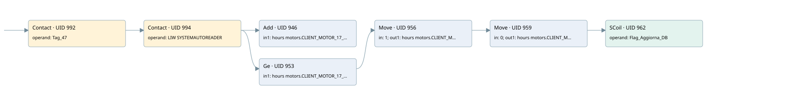

client motor 17
time work motor · 검색 색인 순서 15 · 원본 내부 NID 추정 17
백업 PLF 원본의 2865597 바이트 위치에서 복원한 XML. 검색 문서 1016의 객체 키 161022001812000000000000와 연결했다. 이름 해석 12/12개. 남은 RefId는 상수 또는 미해석 참조다.
연결 구조 다시 그리기
원본 Part/PCon/Wire를 이용한 연결도다. TIA 화면의 래더 배치 또는 실행 결과를 재현한 그림은 아니다. 핀 연결은 아래 표와 원본 XML을 기준으로 읽는다. 노드 위에 마우스를 두면 피연산자 이름을 볼 수 있다.

접점·코일·블록과 피연산자
| Part UID | Gate | Negated 핀 | 연결 피연산자 |
|---|---|---|---|
| 992 | Contact | operand = Tag_47 | |
| 994 | Contact | operand = LIW SYSTEMAUTOREADER | |
| 946 | Add | in1 = hours motors.CLIENT_MOTOR_17_MIN; in2 = 1; out = hours motors.CLIENT_MOTOR_17_MIN | |
| 953 | Ge | in1 = hours motors.CLIENT_MOTOR_17_MIN; in2 = 60 | |
| 956 | Move | in = 1; out1 = hours motors.CLIENT_MOTOR_17_HOUR | |
| 959 | Move | in = 0; out1 = hours motors.CLIENT_MOTOR_17_MIN | |
| 962 | SCoil | operand = Flag_Aggiorna_DB |
접점 경로를 펼친 조건식
Contact·O/A·비교기의 원본 연결을 읽기 쉽게 펼친 보조 해석이다. POWER는 전원 레일 시작을 뜻한다. 호출 블록·에지·타이머의 내부 동작과 다중 쓰기 순서는 이 표로 실행 검증하지 않았다. 미해석 핀과 RefId는 원문 연결표에서 확인한다.
| UID | 동작 | 대상 | 원본 접점 경로 | 내용 |
|---|---|---|---|---|
| 956 | Move | hours motors.CLIENT_MOTOR_17_HOUR | ((Tag_47 AND LIW SYSTEMAUTOREADER) AND [hours motors.CLIENT_MOTOR_17_MIN >= 60]) | Move 입력 1 |
| 959 | Move | hours motors.CLIENT_MOTOR_17_MIN | Move UID 956.eno (블록 동작 확인) | Move 입력 0 |
| 962 | SCoil | Flag_Aggiorna_DB | Move UID 959.eno (블록 동작 확인) | 조건 성립 시 Set |
원본 배선 연결
| Wire UID | 동일 Wire 연결 끝점 |
|---|---|
| 996 | Powerrail {} ↔ Part 992.in |
| 975 | ORef 963 (Tag_47) ↔ Part 992.operand |
| 993 | Part 992.out ↔ Part 994.in |
| 976 | ORef 964 (LIW SYSTEMAUTOREADER) ↔ Part 994.operand |
| 995 | Part 994.out ↔ Part 946.en ↔ Part 953.pre |
| 977 | ORef 965 (hours motors.CLIENT_MOTOR_17_MIN) ↔ Part 946.in1 |
| 978 | ORef 966 (1) ↔ Part 946.in2 |
| 979 | Part 946.out ↔ ORef 967 (hours motors.CLIENT_MOTOR_17_MIN) |
| 980 | ORef 968 (hours motors.CLIENT_MOTOR_17_MIN) ↔ Part 953.in1 |
| 981 | ORef 969 (60) ↔ Part 953.in2 |
| 982 | Part 953.out ↔ Part 956.en |
| 984 | ORef 970 (1) ↔ Part 956.in |
| 986 | Part 956.eno ↔ Part 959.en |
| 985 | Part 956.out1 ↔ ORef 971 (hours motors.CLIENT_MOTOR_17_HOUR) |
| 987 | ORef 972 (0) ↔ Part 959.in |
| 989 | Part 959.eno ↔ Part 962.in |
| 988 | Part 959.out1 ↔ ORef 973 (hours motors.CLIENT_MOTOR_17_MIN) |
| 990 | ORef 974 (Flag_Aggiorna_DB) ↔ Part 962.operand |
식별자 해석 근거 12개
| ORef UID | RefId | 이름 | IdentXmlPart 파일 | 해석 방법 |
|---|---|---|---|---|
| 963 | 1 | Tag_47 | 0613-IdentXmlPart.xml | UID/RID + search-text + NID agreement |
| 964 | 104 | LIW SYSTEMAUTOREADER | 0613-IdentXmlPart.xml | UID/RID + search-text + NID agreement |
| 965 | 106 | hours motors.CLIENT_MOTOR_17_MIN | 0615-IdentXmlPart.xml | UID/RID + search-text + NID agreement |
| 966 | 7 | 1 | 0616-IdentXmlPart.xml | literal candidate: UID/RID/NID + nearby named declarations + search-text agreement |
| 967 | 106 | hours motors.CLIENT_MOTOR_17_MIN | 0615-IdentXmlPart.xml | UID/RID + search-text + NID agreement |
| 968 | 106 | hours motors.CLIENT_MOTOR_17_MIN | 0615-IdentXmlPart.xml | UID/RID + search-text + NID agreement |
| 969 | 8 | 60 | 0616-IdentXmlPart.xml | literal candidate: UID/RID/NID + nearby named declarations + search-text agreement |
| 970 | 7 | 1 | 0616-IdentXmlPart.xml | literal candidate: UID/RID/NID + nearby named declarations + search-text agreement |
| 971 | 108 | hours motors.CLIENT_MOTOR_17_HOUR | 0615-IdentXmlPart.xml | UID/RID + search-text + NID agreement |
| 972 | 12 | 0 | 0616-IdentXmlPart.xml | literal candidate: UID/RID/NID + nearby named declarations + search-text agreement |
| 973 | 106 | hours motors.CLIENT_MOTOR_17_MIN | 0615-IdentXmlPart.xml | UID/RID + search-text + NID agreement |
| 974 | 13 | Flag_Aggiorna_DB | 0613-IdentXmlPart.xml | UID/RID + search-text + NID agreement |
검색 코드 보조 자료
참조 명칭을 찾기 위한 자료이며 실행 순서나 AND/OR 관계는 위 연결표로 확인한다.
"tag_47" "liw systemautoreader" add "hours motors".client_motor_17_min 1 "hours motors".client_motor_17_min 60 move 1 move 0 "flag_aggiorna_db" "hours motors".client_motor_17_hour "hours motors".client_motor_17_min "hours motors".client_motor_17_min